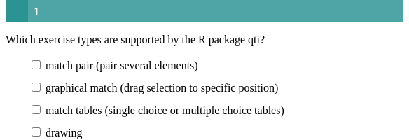
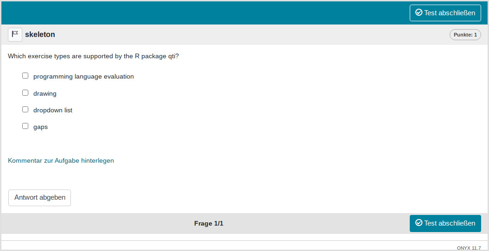
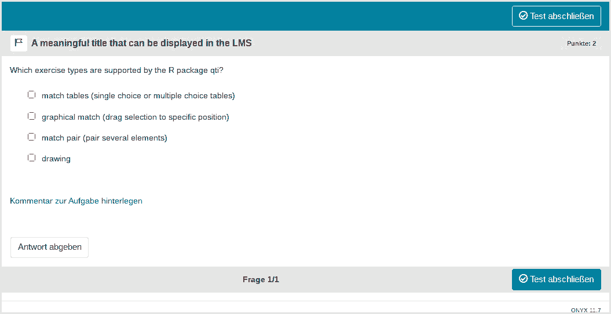

Minimum version
A template is available in RStudio when you click on
New file -> R Markdown -> From Template. The qti
templates start with QTI:. Here we look at the templates
QTI: multiplechoice (simple) and
QTI: multiplechoice (complex).
The minimum you need to provide is the type: mpc (or the
equivalent type: multiplechoice or
type: mchoice) in the yaml-section and a list with at least
two elements in a section called # question:
---
type: mpc
knit: qti::render_qtijs
---
# question
Which exercise types are supported by the R package qti?
- *dropdown list*
- programming language evaluation
# feedback
All basic types of QTI are supported, including dropdown list. More advanced exercises (as available in OPAL/ONYX) are not yet supported because they are LMS specific.Note that in this example, a feedback section was also provided. This is optional, but usually it is a good idea to give some explanation for students.
Further note that the knit parameter is set to the
custom qti knit function, which will handle the preview. Clicking the
Knit button in RStudio produces the following in the viewer pane (or
browser of your choice):

You can also use the opal (set it up before, see: API Opal) render function
(knit: qti::render_opal), which should produce the
following:

Multiple choice exercises are essentially the same as single choice
exercises, except that none or several choices can be correct. The
correct choices are specified by surrounding them with asterisks
(markdown for italic). If you need to use italic in your choices,
surround the whole question with the <i> </i>
tag, instead. Note that the default points are \(0.5n\), where \(n\) is the number of choices. Here we have
4 choices, so 2 points can be reached. For a correct choice 0.5 points
are gained, for an incorrect 0.5 are deducted. The minimum number of
points is 0 in any case.
More control
If you want to have more fine-grained control, consider the available
attributes for the yaml section in the RMD template
QTI:multiple-choice (complex). In addition you can also set
feedback for correct and incorrect responses.
---
type: multiplechoice # equivalent to mpc
knit: qti::render_qtijs # if you do not want our preview renderer, remove this
identifier: TOPIC2_Q001 # think twice about this id for later data analysis!
title: A meaningful title that can be displayed in the LMS
shuffle: true # random order of choices
orientation: vertical # OR horizontal
points: 2
---
# question
Which exercise types are supported by the R package qti?
- *match pair (pair several elements)*
- *match tables (single choice or multiple choice tables)*
- drawing
- graphical match (drag selection to specific position)
# feedback
All basic types of QTI are supported. More advanced exercises (as available in OPAL/ONYX) are not yet supported because they are LMS specific.Which renders in Opal as:

yaml attributes
identifier
This is the id of the exercise, useful for later data analysis of results. The default is the file name. If you are doing extensive data analysis later on, it makes sense to specify a meaningful identifier. In all other cases, the file name should be fine.
title
Title of the exercise. Can be displayed to students depending on the learning management system settings. Default is the file name.
shuffle
If true, randomizes the order of the choices. Defaults
to true. Only in rare occasions it makes sense to have a
strict order of choices (setting shuffle to false).
points
How many points are given for the wholte exercise. Default is the number of choices times 0.5. The points \(p\) are divided by the number of choices \(c\) and then distributed over all choices. A correct choice will get the student +\(p/c\), an incorrect choice -\(p/c\). If there is no such procedure, a student could always select all answers and get the maximum number of points. See also the section Some advice on multiple choice exercises.
Feedback
Feedback can be provided with the section
- # feedback (general feedback, displayed every time, without conditions)
- # feedback+ (only provided if student reaches all points)
- # feedback- (only provided if student does not reach all points)
List of answers as a variable
For more complex exercises the list of answers is often just
available as a variable. In this case you can use the helper function
mdlist to convert the vector into a markdown list:
mdlist(c("dropdown list", "programming language evaluation", "numeric gap"),
solutions = c(1, 3))
[1] "- *dropdown list*\n- programming language evaluation\n- *numeric gap*"Some advice on multiple choice exercises
A multiple choice exercise can always be transformed to multiple single choice exercises with the choices true/false or yes/no. Thus, from a psychometric perspective both types suffer from the same problems. They should be avoided if possible. This is mainly because guessing can never be ruled out. Psychometric properties will usually be worse than for numeric or string gap exercises that are similar in content.
There are situations where forced choice exercises cannot be entirely avoided. For instance, presenting several statistical analyses and asking the student whether the result is statistically significant or not is a good exercise. Still, this exercise should not be a multiple choice exercise because there are better alternatives: single choice, dropdowns or match tables. A multiple choice exercise can always be transformed into several single choices or dropdowns with the choices yes/no. For a long multiple choice list this is rather inconvenient but one could use a match table with the choices yes/no instead.
The advantage of these other exercise types is that the student has to make a selection. If the student does not have to make a selection he or she could get points even though the question was not even answered. Imagine a multiple choice exercise where all choices are incorrect. Without even attempting to solve this exercise, a student would get all points. If you use multiple choice exercises you have to balance out the yes/no responses. For single choices, dropdowns and match tables, this is not the case. So although we do support multiple choice exercises, we advise strongly against using them at all.